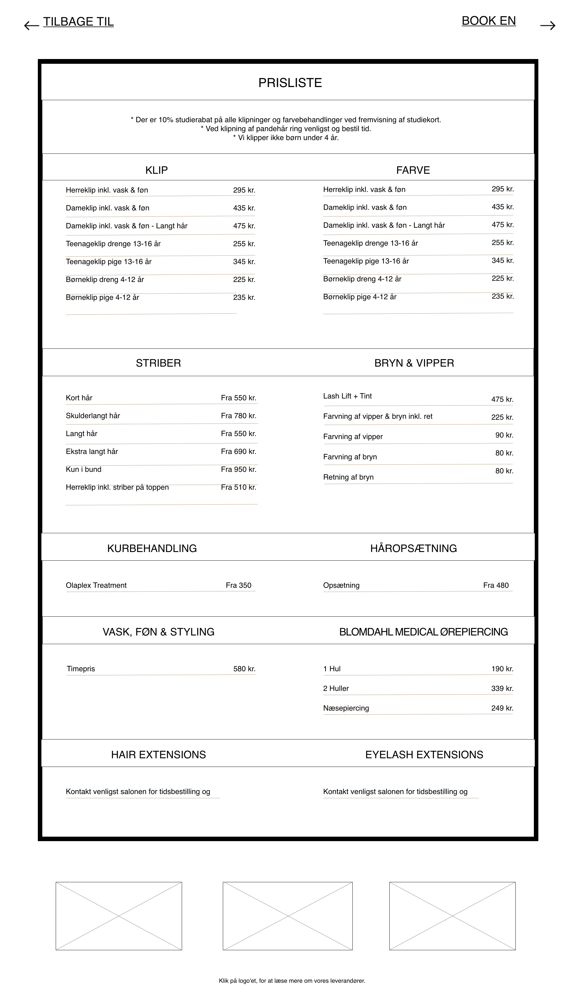

Define
Virksomhedens budskab
Virksomhedens budskab er at de er en hyggelig salon hvor kunderne kan føle sig godt tilpas og få udført services af høj kvalitet, uden at blive udsat for kemikalier der kan skade dem selv eller miljøet.
Målgruppen
Da virksomheden allerede er godt etableret i nærområdet vil vi fokusere på virksomhedens særlige kendetegn og sundhed og miljø, der kan få folk, der bor længere væk til at komme ud til virksomheden. Mere specifikt de unge og miljøbevidste.
Brugerrejser
Vi vil fokusere på den brugerrejse hvor man kommer ind på hjemmesiden, ser at det er miljøvenligt, går videre til services og priser og ser at det er god kvalitet til en god pris og derefter klikker på bestil en tid.
Kommunikation af indhold
Wireframe
Nedenfor ses en wireframe af hjemmesiden, her har vi fokuseret på den funktionelle udfoldelse og tingene er sat op på en mere stringent og overskuelig måde i forhold til det nuværende site, hvor tingene virker tilfældigt placeret.
Wireframe over mobile, forside og prisliste:
Wireframe over desktop, forsiden:
Wireframe over desktop, prislisten:
Indhold
Den oprindelige side har som udgangspunkt en god mængde indhold og vi beholder derfor dette. Det vi har gjort er at omstrukturrerer det eksisterende indhold og gøre plads til mere visuelt indhold i form af billeder og video.
Forside
- Logo og splash billede
- Scroll snap galleri med billeder fra salonen
- Velkommen
- Beskrivelse
- Link til online booking
- Personale
- Billeder af medarbejderne
- Link til prisliste
- Video
- Åbningstider
- Link til andre sider
- Instergram
- Bedømmelse
- Kontakt
- Adresse
- telefon
- Kort
Prisliste side
- Rabatter
- Klip
- Farver
- Striber
- Bryn og vipper
- Kurbehandling
- Håropætning
- Vask føn og tørring
- Blomdahl medical ørepiercing
- Hair extensions
- Eyelash extensions
Det visuelle udtryk
Moodboard
Vores moodboard er en kombination af eksisterende frisør hjemmesider og billeder med hår. Ud fra vores moodboard tydeliggøres hvilke farvetoner og stiludtryk vi gerne vil fremhæve. Der fokuseres på varme farver da Frisør CLeo gerne vil fremstå hyggelig og imødekommende.
Styletile
På vores styletile er vist de specifikke farver vi vil benytte på hjemmesiden, her ses det også at vi vil fortsætte med virksomhedens eksisterende logo, se,vom det måsk i fremtiden vil være en ide at redesigne det.
Vi viser at vi vil
tage billeder gennerelt i salonen, men også vil fokusere på salonens miljørigtige produkter og arbejdsprocess ved at afbillede en der bliver klippet.
wireframe med farver og billede eksempler
Her har vi samlet vores wireframe med de designvalg, der er taget i forhold til styletile
Wireframe over mobile, forside og prisliste

Wireframe over desktop, forsiden
Wireframe over desktop, prislisten